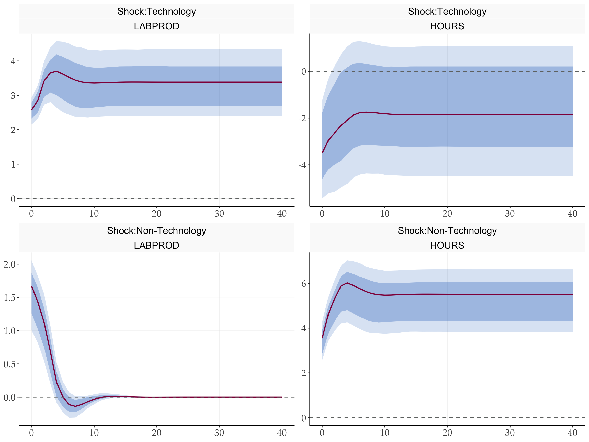
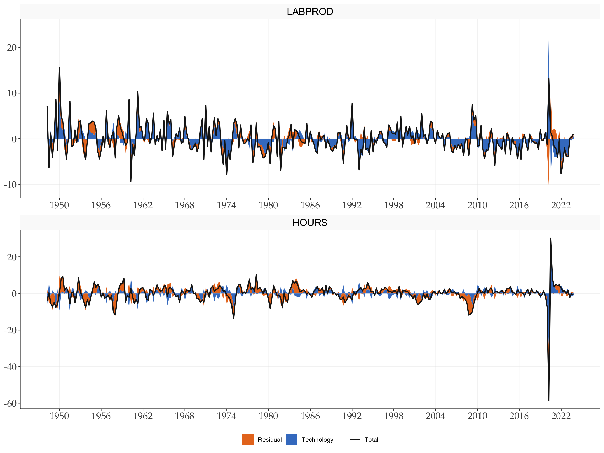

library(tidyverse)
library(tidyMacro)
library(tictoc)
set_theme(ftheme_tidyMacro())Replication: Galí (1999)
Technology, Employment, and the Business Cycle: Do Technology Shocks Explain Aggregate Fluctuations?
1 Overview
This document replicates the main empirical results of Galí (1999) shocks can have a permanent effect on labor productivity.
2 Setup
3 Data
data("Gali1999")
Gali1999 |> head()
#> # A tibble: 6 × 3
#> Date Productivity Hours
#> <date> <dbl> <dbl>
#> 1 1947-04-01 2.01 -0.507
#> 2 1947-07-01 -3.20 3.09
#> 3 1947-10-01 3.82 3.03
#> 4 1948-01-01 12.0 -1.99
#> 5 1948-04-01 9.54 0.186
#> 6 1948-07-01 -3.11 3.63y <- Gali1999 |> select(Productivity, Hours) |> as.matrix()
dates <- Gali1999 |> pull(Date)
T <- nrow(y)
N <- ncol(y)4 VAR Estimation
# Lag length selection via AIC
p <- fAICBIC(y, pmax = 4, c = 1)$aic
c <- 1
# Estimate VAR
var_result <- fVAR(y, p = p, c = c)
# Variance-covariance matrix of reduced-form residuals
Sigma <- var_result$sigma5 BQ Identification
horizon <- 40
wold <- fwoldIRF(var_result, horizon = horizon)
# Long-run multiplier matrix
C1 <- apply(wold, c(1, 2), sum)
# Lower Cholesky of long-run covariance
D1 <- t(chol(C1 %*% Sigma %*% t(C1)))
# Structural impact matrix
K <- solve(C1, D1)
# BQ IRFs (in first differences)
irf_bq <- fbqIRF(wold, K)6 Bootstrap Confidence Bands
tic()
boot_bq <- fbootstrapBQ(
y = y,
var_result = var_result,
nboot = 1000,
horizon = 40,
bootscheme = "residual",
cumulate = c(1, 2)
)
toc()
#> 0.069 sec elapsed7 Impulse Response Functions
Level responses are recovered by accumulating the first-differenced IRFs. The first shock is the technology shock; the second is the non-technology shock.
fplotirf_bq(
point = irf_bq,
boot_result = boot_bq,
varnames = c("LABPROD", "HOURS"),
shocknames = c("Shock:Technology", "Shock:Non-Technology"),
cumulate = c(1, 2),
shocks = c(1, 2)
)
8 Forecast Error Variance Decomposition
# Cumulate BQ IRF along horizon (dim 3) to get level responses
irf_cumu <- irf_bq
for (h in 2:dim(irf_bq)[3]) {
irf_cumu[, , h] <- irf_cumu[, , h] + irf_cumu[, , h - 1]
}
# FEVD — reuses Cholesky FEVD function (same maths)
fevd <- fevd_chol(irf_cumu, shock = 0)$fevd
fevd <- fevd[, c(2, 1), ] # optional, for vis purposes
fplot_vardec(
fevd = fevd,
varnames = c("LABPROD", "HOURS"),
shocknames = c("Technology", "Non-Technology")
) +
scale_fill_manual(values = tidyMacro_colors[1:2])
9 Historical Decomposition
histdec_all <- vector("list", N)
ystar_all <- matrix(0, nrow = T - p, ncol = N)
for (series in seq_len(N)) {
res <- fhistdec(y, var_result, K, series)
histdec_all[[series]] <- res$histdec
ystar_all[, series] <- res$ystar
}
names(histdec_all) <- c("LABPROD", "HOURS")
fplot_histdec(
histdec_list = histdec_all,
shock = 1,
shockname = "Technology",
dates = dates,
p = p,
facet_ncol = 1
) +
scale_x_date(date_breaks = "6 years", date_labels = "%Y")
10 Conditional Correlations
Following Galí (1999) , we decompose the unconditional correlation between hours and productivity into shock-specific conditional correlations. The conditional correlation for shock \(i\) is:
# Dimensions of irf_bq: [variables, shocks, horizon]
N_shocks <- dim(irf_bq)[2]
# Numerator: for each shock i, sum of cross-products of IRFs of var 1 and var 2
numerator <- numeric(N_shocks)
for (i in 1:N_shocks) {
temp <- irf_bq[1, i, ] * irf_bq[2, i, ]
numerator[i] <- sum(temp)
}
# Denominator: sqrt of product of sum-of-squares for each shock
irf_squared <- irf_bq^2
denominator <- numeric(N_shocks)
for (i in 1:N_shocks) {
v1 <- sum(irf_squared[1, i, ])
v2 <- sum(irf_squared[2, i, ])
denominator[i] <- sqrt(v1 * v2)
}
# Conditional correlations (one per shock)
cond_corr <- numerator / denominator
# Unconditional correlations
uncond_corr <- cor(y)
cat("Unconditional correlation (Productivity, Hours):", round(uncond_corr[1, 2], 3), "\n")
#> Unconditional correlation (Productivity, Hours): -0.203
cat("Conditional correlation | Technology shock: ", round(cond_corr[1], 3), "\n")
#> Conditional correlation | Technology shock: -0.901
cat("Conditional correlation | Non-Technology shock: ", round(cond_corr[2], 3), "\n")
#> Conditional correlation | Non-Technology shock: 0.733Hours and productivity are nearly uncorrelated unconditionally, which sits uncomfortably with standard RBC theory. Once we condition on the source of variation, the picture sharpens: technology improvements are accompanied by a decline in hours, producing a negative conditional correlation. It is the non-technology shock that drives hours and productivity in the same direction — precisely the co-movement that RBC models mistakenly ascribed to technology.
References
Galí, Jordi. 1999. “Technology, Employment, and the Business Cycle: Do Technology Shocks Explain Aggregate Fluctuations?” American Economic Review 89 (1): 249–71. https://doi.org/10.1257/aer.89.1.249.